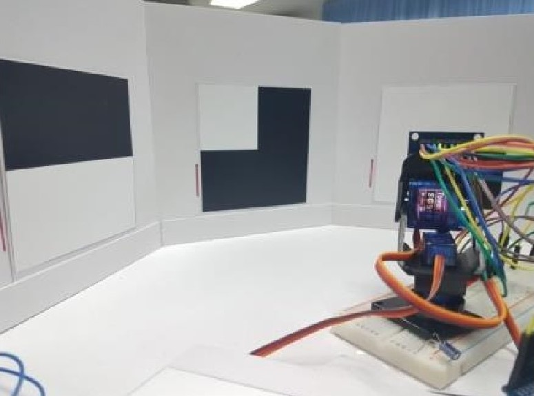
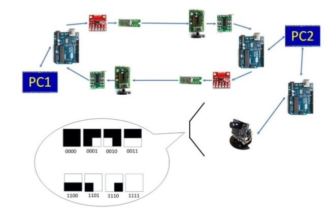

Data Communication Assignment
Data Communication , 2018

Overview

Skill Using
- Stop and Wait ARQ
- Wireless Communication: FM
- Frame Design
- Basic Image processing: Using OpenCV library
- Digital Modulation: FSK (Frequency Shift Keying)
- Error detection: CRC (Cyclic Redundancy Check)